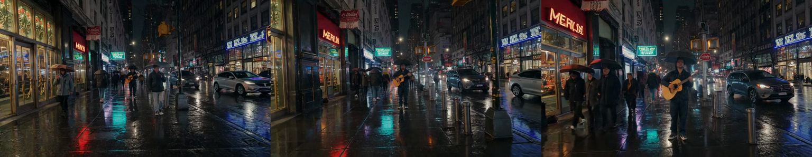

Video generation
orangu-server makes short clips with sound. Point it at
a video model and every chat turn in the web console, and every
/v1/videos or /v1/chat/completions request, is
answered with a clip: an MP4 of AV1 video with a FLAC sound track. That
plays in any current browser, and the server makes it without an
external encoder. This chapter is the practical side: what to download,
how to start the server, and what the web console’s settings do. The
Inference server chapter’s Video generation
section has the reference for every key, and the HTTP endpoints
chapter the API.

The model, in five files
The video model is LTX-2.5, Lightricks’ 22-billion-parameter audio-video diffusion transformer. It draws the picture and the sound together, so a clip of a street at night comes with its traffic and a person who speaks has the voice under the lips. Unsloth publishes it as GGUF, and the distilled checkpoint is the one to serve: it makes a clip in eight steps plus three, without guidance.
orangu-server download unsloth/LTX-2.5-GGUF:Q4_K_MThat is the transformer, 12.65 GiB at Q4_K_M (21.22 GiB
at Q8_0). It carries the transformer and the two text
connectors, but none of the rest. The same repository publishes the rest
beside the GGUFs, and download fetches all four after the
transformer, each skipped when the models directory already holds
one:
- The text encoder:
text_encoders/gemma4-12b-with-proj-ltx-2.5-bf16.safetensors, 24.5 GiB. It is LTX’s own Gemma 4 12B, with the two heads that project its hidden states for the transformer. LTX reads every one of Gemma’s layers, not only the last, which is why a plain Gemma 4 GGUF will not do: the projection heads live in this file. - The video VAE:
vae/ltx-2.5-video-vae-conv-bf16.safetensors, 1.35 GiB. It turns the latents into frames. It is the conv one: LTX-2.5’s diffusion decoder, which Lightricks also publishes, is not run by this server. - The audio VAE:
vae/ltx-2.5-audio-vae-bf16.safetensors, 0.34 GiB. It holds the spectrogram decoder and the vocoder that turns the spectrogram into 48 kHz stereo sound. Without it every clip is silent. - The latent upscaler:
latent_upscale_models/ltx-2.5-latent-spatial-upscaler-x2-bf16-1.0.safetensors, 0.93 GiB. It doubles the first stage’s latent for the second (see Two stages below). Without it a clip is drawn in one stage, at its full size.
None of them is gated: the one command fetches 40 GiB in all, and no token is needed.
The text encoder is converted once. It is published
as bf16 safetensors, the form the transformer was trained
against, and the server serves language models from GGUF. At the first
start that needs it, the server converts it to a GGUF
(Q6_K, the norms in f32) under
<models>/orangu-converted/ (10.0 GiB), which takes
about two minutes on the twelve-core ARM board this chapter’s numbers
come from, and says so in the log; every later start uses the GGUF. The
conversion is llama.cpp’s own for Gemma 4: the same tensor names,
hyperparameters and vocabulary, so the file reads as an ordinary
gemma4 model. Once it exists the safetensors may be
deleted. A GGUF of the encoder made elsewhere, such as
elix3r/gemma4-12b-with-proj-ltx-2.5-GGUF, is used as it
is.
The server finds each companion by what is inside the file, not by
its name: the encoder by its Gemma 4 configuration and its two
projection heads, the VAEs and the upscaler by their tensors. A file in
another directory is named in the configuration instead
(text_encoder, vae, audio_vae,
upscaler).
list shows the transformer as Yes (ltxv),
both Q4_K_M and Q8_0:
39 unsloth/LTX-2.5-GGUF Q4_K_M 12.65 GiB Never Yes (ltxv)
40 unsloth/LTX-2.5-GGUF Q8_0 21.22 GiB Never Yes (ltxv)The converted text encoder is listed as Yes (gemma4),
being a Gemma 4, but it is of no use on its own as a chat model.
Starting the server
The video model is served in its own role, video, and
--video is the flag that asks for it:
orangu-server --videoThat prints the model table with every model that is not a video model greyed out, and pre-selects the first video model, so Enter takes it. The server then reports the companions it found and what a clip at the defaults costs:
ltxv text encoder …/orangu-converted/gemma4-12b-with-proj-ltx-2.5-Q6_K.gguf
ltxv video VAE …/vae/ltx-2.5-video-vae-conv-bf16.safetensors (int8)
ltxv audio VAE …/vae/ltx-2.5-audio-vae-bf16.safetensors
ltxv latent upscaler …/latent_upscale_models/ltx-2.5-latent-spatial-upscaler-x2-bf16-1.0.safetensors
[video] a clip at the defaults (768x448, 121 frames at 24 fps, two stages, with sound) takes about 23 min hereWith the model named in the configuration, the table pre-selects it,
and --daemon starts on it without the table;
orangu-server -i writes such a configuration. Pick the
video model at its model prompt and the wizard asks for the
clip keys, each offering what the server does without it:
[orangu-server]
models = ~/.cache/huggingface/hub
model = unsloth/LTX-2.5-GGUF:Q4_K_M
[web]
port = 8200Nothing else is needed. The defaults are a five-second clip (121
frames at 24 fps) at 768 × 448, in two stages, with sound. The keys are
in the Inference server chapter’s Video
generation section: video_size,
video_seconds (or video_frames),
video_fps, video_audio,
video_two_stage and video_quality, plus the
four companions.
The picker will not serve a video model in any other role
(--image is an error that says so), nor a language model
under --video. bundle refuses a video model,
which does not fit in one file.
Time and memory
A clip is many minutes on a CPU. On the twelve-core ARM board this chapter’s numbers come from, a clip at the defaults (768 × 448, 121 frames, two stages, with sound) took 23 minutes:
| phase | time | |
|---|---|---|
| Encoding the prompt | 12 s | Gemma 4 over the prompt’s tokens, once |
| Stage 1 | 7 min 14 s | eight steps of 54 s at half the size, 1,344 video tokens |
| Upscaling | 20 s | |
| Stage 2 | 11 min 34 s | three steps of 3 min 51 s at the full size, 5,376 video tokens |
| Decoding | 2 min 41 s | the video VAE, 121 frames |
| Sound | 16 s | the audio VAE and the vocoder |
| Encoding the file | 48 s | AV1 and FLAC into a 2.4 MB MP4 |
Smaller clips are much quicker: two seconds at 512 × 320 take about seven minutes and one second about four. A full-size step costs four times a half-size one and more, since every token attends to every other, so stage 2’s three steps take longer than stage 1’s eight.
The server measures what a step costs at startup and says what a clip
at the defaults will take
([video] a clip at the defaults … takes about 23 min here).
After every clip it replaces that estimate with what the clip measured,
and the console counts down from it.
While a clip is made the server holds about 16 GB: the transformer’s 13 GB of weights mapped from disk and read as it runs, the encoder’s 10 GB mapped beside it and read once a clip, and the decoders. A machine with 32 GB serves it; one with less reads the transformer back from disk as it runs, which is slower by however long the disk takes.
Two stages
The distilled checkpoint was made for a two-stage recipe, and the server runs it whenever the latent upscaler is there:
- Stage 1 draws the clip at half its width and height: eight steps from noise, on the fixed schedule the model was distilled for.
- The upscaler doubles the latent’s width and height.
- Stage 2 adds noise back to the latent and refines it at the full size in three more steps.
The first stage has a quarter of the tokens, so most of the steps are
cheap and only three run at the full size. Width and height must
therefore be multiples of 64 (half of them a multiple of the model’s
32). Without the upscaler, or with video_two_stage = no,
all eight steps run at the full size, which is slower and not what the
model was distilled for. Multiples of 32 are then enough.
The sound is drawn in both stages along with the picture, by the same transformer: the two streams attend to each other in every block, which is what keeps the sound in time with the frames.
Length and frame rate
The model draws time in steps of eight frames, plus the first frame on its own, so a clip has 8k + 1 frames. Ask for five seconds at 24 fps (120 frames) and you get 121; ask for 100 frames and you get 97. The caption under a clip, and the API’s answer, give the frames actually drawn.
The time grows with the length, and a little faster than in proportion, since every frame’s tokens attend to every other frame’s.
In the web console
Open the console (http://<host>:8200). The topbar
names the model, and the gear at its right is
Settings.
Downloading from the console
Settings › Models is the model manager. Type
unsloth/LTX-2.5-GGUF:Q4_K_M into the download box and the
transformer arrives first, then its companions, with progress for each
file. The companions follow it. When the downloads finish, the row’s
Load button restarts the server on the model, and the
console reconnects on its own.
Clip settings
Settings › Video holds what every clip gets. Each row has an (i) that explains it on hover.
| setting | choices | |
|---|---|---|
| Size | 512 × 320 up to 1280 × 704, or
Other… for any WIDTHxHEIGHT |
Multiples of 64 in two stages, 32 in one. 768 × 448 is the default; 512 × 320 is a preview |
| Length | 2, 3, 5, 8, 10 seconds, or a number | Snapped to 8k + 1 frames; the line under the rows says how many |
| Frame rate | 24, 25, 30 | The model is trained at 24 |
| Sound | on, off | Off skips decoding the sound into the file. The model draws it either way. Greyed without the audio VAE |
| Two stages | on, off | The distilled recipe above. Greyed without the upscaler |
| Quality | 40, 80, 120, 160, or a number | The AV1 encoder’s quantizer: lower looks better and makes a larger file |
Under the rows, a line gives the frame count and what a clip at these settings costs on this server, from the server’s own measured rate, and updates as you change them. Reset puts the form back to the configuration file’s values, and the dialog’s Save makes the form the server’s defaults until it restarts.
Making a clip
Type a prompt and send it. The robot blinks beside the phase and a countdown: Encoding, Stage 1 · step 3/11 · 6m 10s, Upscaling, Stage 2, Decoding, Sound, Encoding the file. The time comes from the server’s estimate, corrected at every step. The reply is the clip in the browser’s own player, with a save control under it that downloads the MP4, and a caption with the size, frames, frame rate, length, whether it has sound, and the seed. Clips are kept beside the session and come back through History.
A long clip can be stopped with the console’s Stop button, or by closing the tab: the work ends at the next transformer block. Ctrl+C on the server ends it as quickly.
Writing a prompt
LTX-2.5 was trained on long, concrete descriptions, and works best with one: the subject and what it does, the camera and how it moves, the light, and the sound. For example:
A red fox trots through fresh snow at the edge of a pine forest at dawn, its breath steaming. The camera tracks alongside at its height. Soft blue light, falling snowflakes. The crunch of paws in snow and a distant crow.
One sentence works too, but the model fills in what it is not told, and the sound most of all.
Through the API
Everything the console does, a client can:
POST /v1/videosis OpenAI’s Videos API. It takesprompt,secondsandsize, plus the local knobsframes,fps,seed,audio,two_stageandquality. It answers at once with avideoobject (status: "queued").GET /v1/videos/{id}reports itsprogress, itsphaseand this server’seta_seconds, andGET /v1/videos/{id}/contentreturns the MP4 once the status iscompleted.stream: truekeeps the connection open and sends progress events until the clip is done, for a client that would rather not poll.POST /v1/chat/completionson the same server treats the last user message as the prompt and answers with a link to the clip’s content.GET /propsreports the companions, the defaults and the measured rate, andPOST /propssets the defaults. The Video pane’s Save calls it.
curl -s localhost:8100/v1/videos -H 'Content-Type: application/json' \
-d '{"prompt": "A paper boat drifts down a rain-filled gutter", "seconds": 3, "size": "512x320"}'
# {"id": "video_…", "status": "queued", …}
curl -s localhost:8100/v1/videos/video_… | jq .progress
curl -s -o boat.mp4 localhost:8100/v1/videos/video_…/contentAll of it is documented field by field in the HTTP endpoints chapter.
What to expect, and what not
- One clip at a time. A second request waits for the first.
- The video pipeline runs on the CPU. The transformer
is 13 GiB and more, past what a card holds beside the text encoder. The
encoder stays on the CPU as well, with its weights as the file has them,
since it reads one prompt a clip and the memory is the transformer’s; an
explicit
backendorprompt_weightsoverrides that. - The first estimate is a calibration. Until a clip has been made, the wait is reckoned from one block timed at startup (23 minutes estimated for the defaults here, 23.1 measured). After a clip it is that clip’s own measured rate.
- Text to video only. LTX-2.5 can also start a clip from a picture. This server does not do that yet, and the console’s attach menu does not offer it.